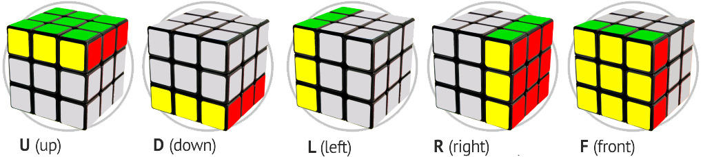

Solution
1 Jule, 2020 • 67 mins


The Language
Many 3×3×3 Rubik's Cube enthusiasts use a notation developed by David Singmaster to denote a sequence of moves, referred to as "Singmaster notation".Its relative nature allows algorithms to be written in such a way that they can be applied regardless of which side is designated the top or how the colours are organised on a particular cube.
- F (Front): the side currently facing the solver
- B (Back): the side opposite the front
- U (Up): the side above or on top of the front side
- D (Down): the side opposite the top, underneath the Cube
- L (Left): the side directly to the left of the front
- R (Right): the side directly to the right of the front
- ƒ (Front two layers): the side facing the solver and the corresponding middle layer
- b (Back two layers): the side opposite the front and the corresponding middle layer
- u (Up two layers): the top side and the corresponding middle layer
- d (Down two layers): the bottom layer and the corresponding middle layer
- l (Left two layers): the side to the left of the front and the corresponding middle layer
- r (Right two layers): the side to the right of the front and the corresponding middle layer
- x (rotate): rotate the entire Cube on R
- y (rotate): rotate the entire Cube on U
- z (rotate): rotate the entire Cube on F
Optimal solutions
Although there are a significant number of possible permutations for Rubik's Cube, a number of solutions have been developed which allow solving the cube in well under 100 moves.
Many general solutions for the Cube have been discovered independently. David Singmaster first published his solution in the book Notes on Rubik's "Magic Cube" in 1981. This solution involves solving the Cube layer by layer, in which one layer (designated the top) is solved first, followed by the middle layer, and then the final and bottom layer. After sufficient practice, solving the Cube layer by layer can be done in under one minute. Other general solutions include "corners first" methods or combinations of several other methods. In 1982, David Singmaster and Alexander Frey hypothesised that the number of moves needed to solve the Cube, given an ideal algorithm, might be in "the low twenties". In 2007, Daniel Kunkle and Gene Cooperman used computer search methods to demonstrate that any 3×3×3 Rubik's Cube configuration can be solved in 26 moves or fewer. In 2008, Tomas Rokicki lowered that number to 22 moves, and in July 2010, a team of researchers including Rokicki, working with Google, proved the so-called "God's number" to be 20.This is optimal, since there exist some starting positions which require a minimum of 20 moves to solve. More generally, it has been shown that an n×n×n Rubik's Cube can be solved optimally in Θ(n2 / log(n)) moves.
Speedcubing methods
A solution commonly used by speedcubers was developed by Jessica Fridrich. This method is called CFOP standing for "cross, F2L, OLL, PLL". It is similar to the layer-by-layer method but employs the use of a large number of algorithms, especially for orienting and permuting the last layer. The cross is done first, followed by first layer corners and second layer edges simultaneously, with each corner paired up with a second-layer edge piece, thus completing the first two layers (F2L). This is then followed by orienting the last layer, then permuting the last layer (OLL and PLL respectively). Fridrich's solution requires learning roughly 120 algorithms but allows the Cube to be solved in only 55 moves on average
A now well-known method was developed by Lars Petrus. In this method, a 2×2×2 section is solved first, followed by a 2×2×3, and then the incorrect edges are solved using a three-move algorithm, which eliminates the need for a possible 32-move algorithm later. The principle behind this is that in layer-by-layer, one must constantly break and fix the completed layer(s); the 2×2×2 and 2×2×3 sections allow three or two layers (respectively) to be turned without ruining progress. One of the advantages of this method is that it tends to give solutions in fewer moves. For this reason, the method is also popular for fewest move competitions.
The Roux Method, developed by Gilles Roux, is similar to the Petrus method in that it relies on block building rather than layers, but derives from corners-first methods. In Roux, a 3×2×1 block is solved, followed by another 3×2×1 on the opposite side. Next, the corners of the top layer are solved. The cube can then be solved using only moves of the U layer and M slice.
Records
- Single time: The world record time for solving a 3×3×3 Rubik's Cube is 3.47 seconds, held by Du Yusheng (杜宇生) of China, on 24 November 2018 at Wuhu Open 2018.[
- Average time: The world record average of the middle three of five solve times (which excludes the fastest and slowest) is 5.53 seconds, set by Feliks Zemdegs of Australia at Odd Day at Sydney 2019.
- One-handed solving: The world record fastest one-handed solve is 6.82 seconds, set by Max Park of the United States on 12 October 2019 at Bay Area Speedcubin' 20 2019. The world record fastest average of five one-handed solves is 9.42 seconds, also set by Max Park at Berkeley Summer 2018.
- Feet solving: The world record fastest Rubik's Cube solve with one's feet is 15.56 seconds, set by Mohammed Aiman Koli of India on 27 December 2019 at VJTI Mumbai Cube Open 2019. The world record average of five feet solves is 19.90 seconds, set by Lim Hung (林弘) of Malaysia on21 December 2019 at Medan 10th Anniversary 2019.
- Blindfold solving: The world record fastest Rubik's Cube solve blindfolded is 15.50 seconds (including memorization), set by Max Hilliard of the United States on 1 August 2019 at CubingUSA Nationals 2019. The world record mean of three for blindfold solving is 18.18 seconds, set by Jeff Park of the United States on 14 December at OU Winter 2019.
- Multiple blindfold solving: The world record for multiple Rubik's Cube solving blindfolded is 59 out of 60 cubes, set by Graham Siggins of the United States on 9 November 2019 at OSU Blind Weekend 2019. Siggins inspected 60 cubes, donned a blindfold, and solved successfully 59 of them, all under the time limit of one hour.
How to Solve?
Here we come Now you can watch a short video and you will understand how to solve